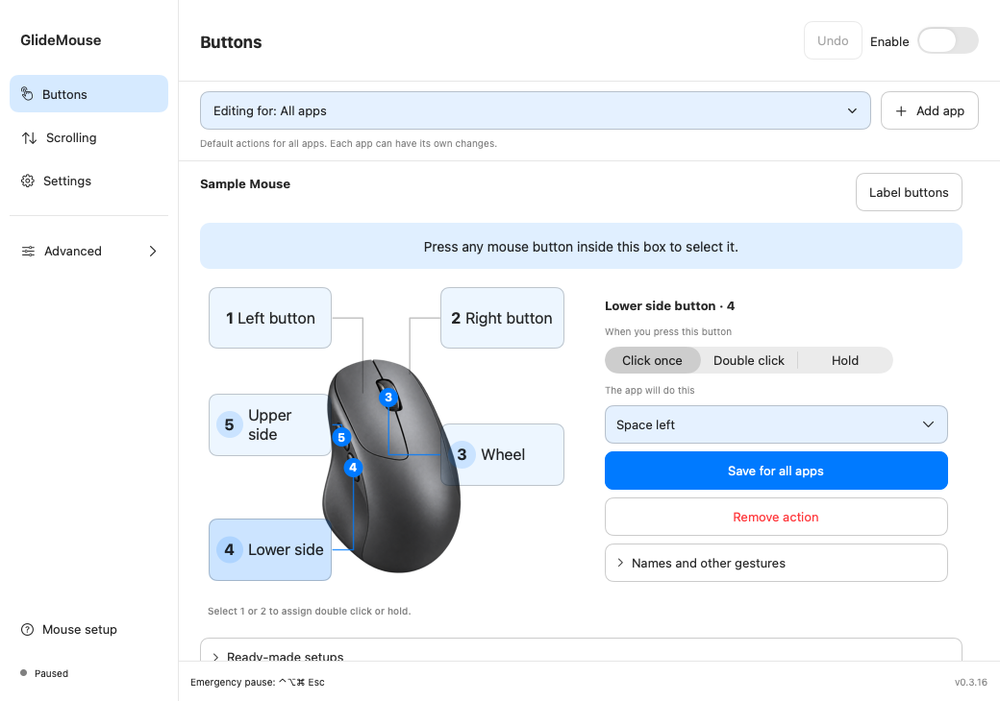
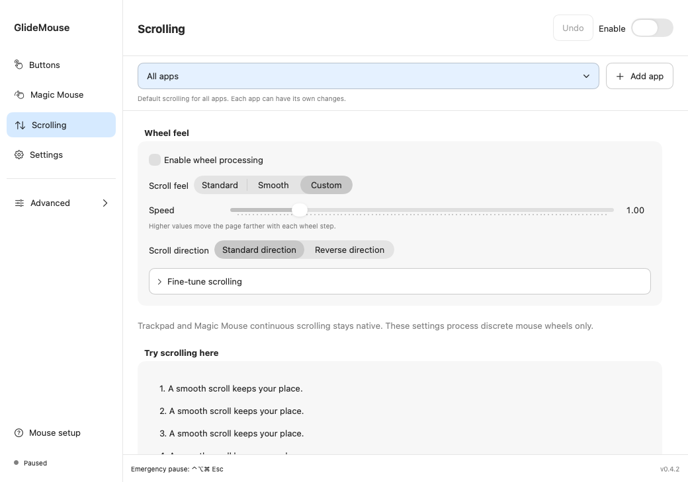
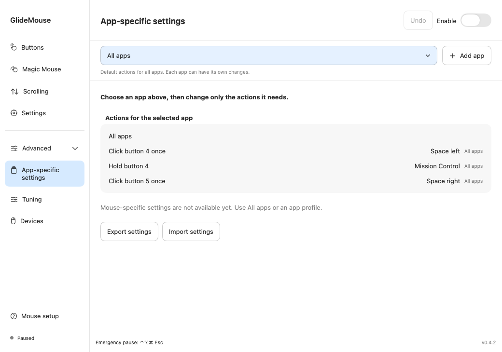

More from the mouse you already use.
Switch desktops with a side button. Hold to see your windows. Find a scrolling feel that suits you. GlideMouse makes everyday mouse controls easier to set up on your Mac.

GlideMouse overview
A look at button actions, scrolling and settings for individual apps.
0:32 · English text and music
Read the full guideSee how it works
Choose an example to see the button press and the action together. You can change each action in GlideMouse.
Buttons 1 and 2 support optional double-click and hold actions. Ordinary clicking and dragging remain available.
Upper side button · click
Next desktop
Press once to move one desktop to the right.

Adjust scrolling
Start with Standard or Smooth. Adjust speed and direction first; open the finer controls when you need them. Continuous trackpad scrolling stays native.
- Make each wheel step shorter or longer.
- Choose a direct response or softer movement.
- Turn momentum off for a more precise stop.

Settings for each app
All apps is your starting point. Change an action for Safari, your editor or another app when it needs something different. Everything else keeps the default.
For example: lower-side click switches desktops normally, but goes Back when Safari is in front.
Remove an app setup whenever you like. It removes its GlideMouse settings; it does not uninstall the app. Undo brings the setup back.
Getting started
-
Connect and allow
Connect your mouse. Allow Accessibility for your chosen actions and Input Monitoring to recognize buttons and wheel input.
-
Identify a button
Press inside the blue capture box. Confirm the detected button’s physical position on the mouse picture.
-
Choose, save, try
Choose Click once, Double click or Hold. Pick an action, save it, and test outside the capture box.
Start with one action. Add app-specific settings and advanced gestures when you need them.
Download GlideMouse
Download GlideMouse, move it into Applications, and follow Mouse setup.
Release notes & checksumsCommon questions
Pause: ⌃⌥⌘ Esc
Will this work with my mouse?
Connect your mouse and use Mouse setup to identify its buttons. GlideMouse supports standard mouse buttons and scroll wheels. Some manufacturer-specific buttons may not be detected.
Why does it need two permissions?
Accessibility lets GlideMouse perform actions you chose. Input Monitoring lets it recognize button and wheel input. Mouse control works locally, and the app does not keep a log of what you type. Update checks contact the configured update host.
Can I get my normal mouse back?
Yes. Pause from the menu bar or press Control + Option + Command + Escape. Remove an action or use Undo to restore a recent change. Export your settings when you want a backup.
Do I need to set up every app?
No. All apps provides the default. Only add an app when you want a different action or scrolling feel while that app is frontmost.